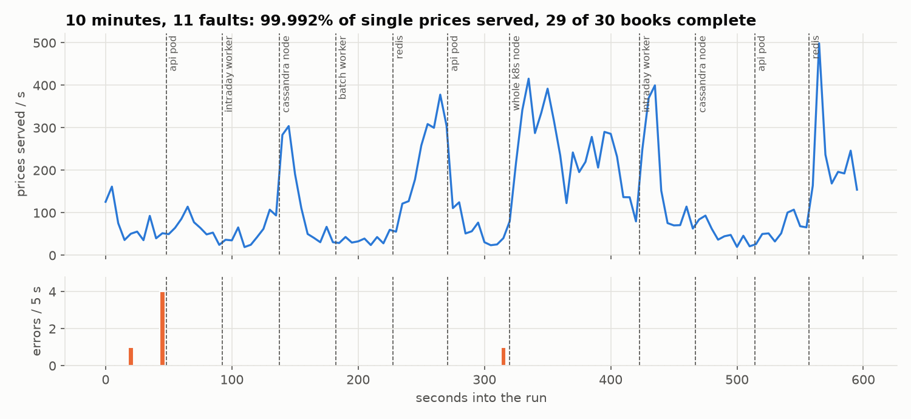
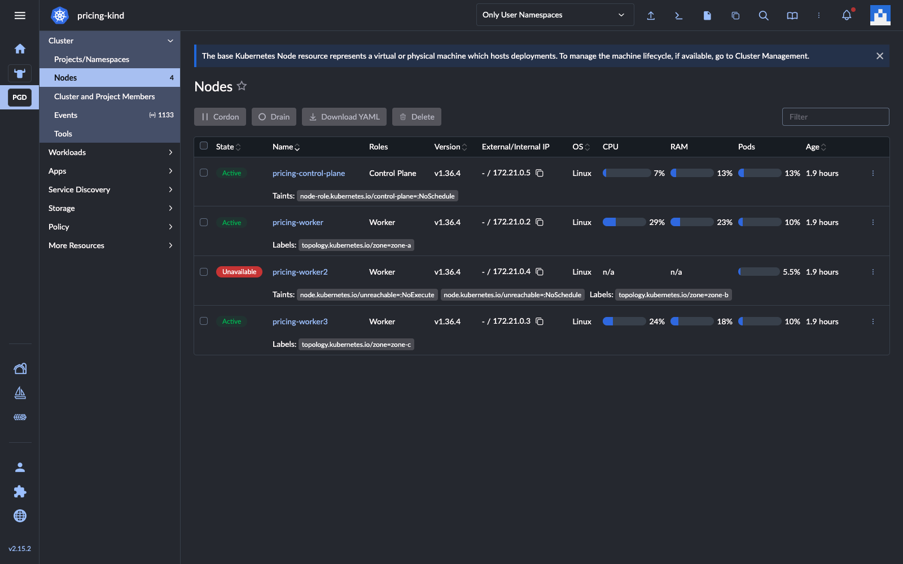
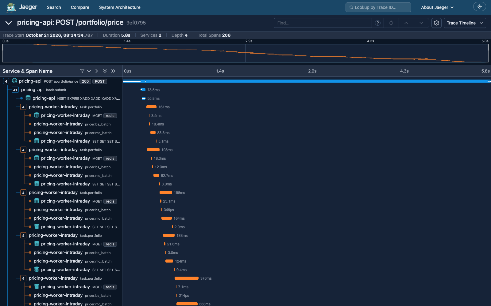

Project brief · distributed systems · financial engineering · SRE
Distributed Pricing Service
A front-office pricing and CVA platform in miniature: a C++20 Monte Carlo library behind a Python service, distributed across Kubernetes worker pools on Redis Streams and Cassandra, managed in Rancher, observed end to end, and run through chaos tests that kill pods, databases and a whole node under load.
How it behaves under failure, and how you would know

Ten minutes, 11 faults. Prices served per second (top) and errors per 5 s (bottom); dashed lines are faults. An interactive replay is on the case-study site.
Operation or failure
What the system does
Evidence
Single price
Cache read; on a miss, one pod computes under a lock, with the GIL released
~1 ms hit; 4 ms p50 miss (200k paths)
Book (intraday)
Split into tasks on the intraday stream; one cache read, one C++ batch and one write per task
One trace across 3 pods (206 spans)
Exposure run (batch)
Scenario blocks on the batch stream; KEDA scales from 0; exact merge
604 M revaluations in 2.7 s; identical on 1-8 workers
Worker killed
Unacked task reclaimed after 10 s idle and re-priced, same answer
0 of 10,000 trades lost
Redis killed
Circuit opens; pricing continues uncached; queues survive on the AOF
0 errors; RedisCircuitOpen → platform
Cassandra node killed
Quorum writes continue on 2 of 3 replicas
0 failed writes; ReplicaDown → database
Kubernetes node stopped
NotReady at ~50 s, pods evicted at ~80 s and rescheduled across zones
NodeNotReady → platform; 1 book lost (open item)
Load spike
Admission control returns 503 + Retry-After; HPA and KEDA add pods
API 3 → 8 pods in 26 s, 0 errors

Rancher during the node outage: the node is Unavailable and tainted.

One book as one trace across the API and workers.
Found and fixed by the chaos runs: books lost while a dead node was still in rotation (fixed with an idempotent retry); monitoring that died with the node it watched (moved to the control plane); an SLO panel that read "No data" when there were zero errors. Still open: one book in 30 lost during a two-minute node outage; the fix is an idempotency key the client polls on.
Independent learning project on synthetic data; every number is generated from the measured results in the repository.2 / 2